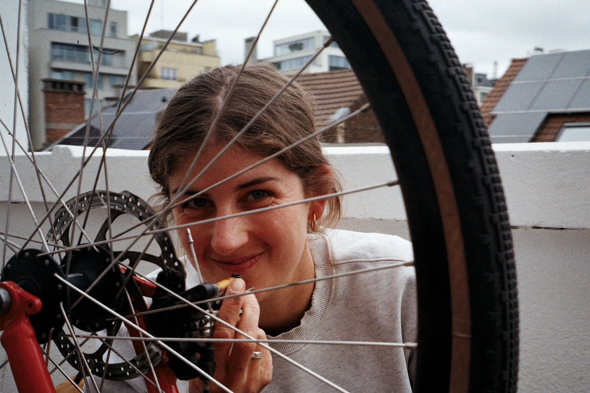
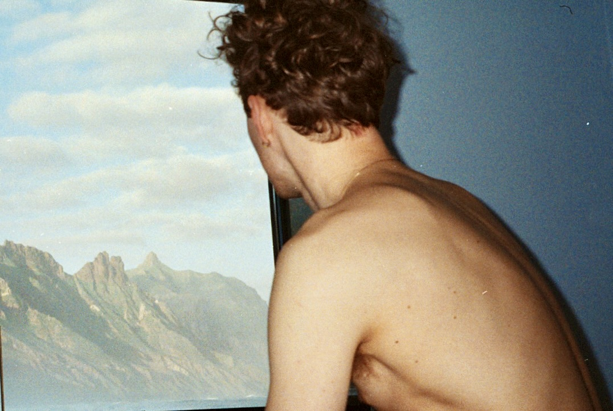

Ema Prović
Film Photography
About
Ema Prović captures life on film and shares its many unfolding stories through her writing. Recent projects explore the geography of the self; nature, belonging and the transformative power of movement.
Projects

Languishing: Nature and (be-)longing
An exploration of craving to be outdoors and the restorative power of being in nature.
Read